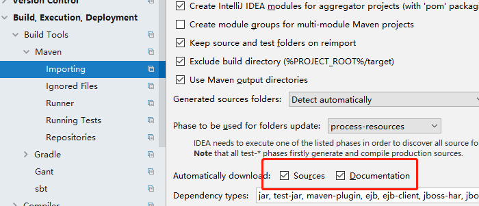

Soft & Tool
idea
快捷键
格式化代码：ctrl+alt+l导入单个包：alt+enter生成get/set：alt+insert全局查找某个接口或类：ctrl+alt+shift+n跳到抽象方法的实现，接口的实现：ctrl+alt+b/ctrl+h跳到指定行：ctrl+g生成函数返回值的数据类型与引用：ctrl+alt+v进入方法的实现：ctrl+alt+左键单击查看类uml关系图：进入类中 右键Diagrams->ShowDiagrams或者快捷键：CTRL+shift+alt+u在当前文件中替换：ctrl+r全局选定路径替换：ctrl+shift+r小写变大写快捷键：ctrl+shift+u选中一个单词：ctrl+w普通java工程导入依赖jar包
file--Project Structure--Modules 在右边选项卡中点选Dependencies--scope傍边的
+号，选择第一项JARs or Directories选择对应的jar包，不用打勾，ok，导入成功
查看源码显示注释
- File --> setting -->Build,Execution,Deployment -->Build Tools --> Maven --> Importing。
- 勾选Sources和Documentation，并reimport maven。
- 源码右上角出现
download source，点击下载。- 如果显示
下载失败，找不到资源。- 到pom.xml的目录下，执行mvn dependency:resolve -Dclassifier=sources。
- 下载完成之后，点击窗口右上角
choose source，选择带source的源码包。

自动换行
设置当一行超过指定字符个数时，代码自动换行，【File】-->【Settings】-->【Code Sytle】中勾选【Wrap on typing】选项 。
单行注释
默认快捷键
ctrl+/使用单行注释注释代码时，idea会在行首显示//，如下代码块第一行显示，这里我们通过设置修改成第二行的样子，使得代码看起来没有那么凌乱，设置如图。xxxxxxxxxx// Systen.out.Println("hello");// Systen.out.Println("hello");

Git
本想将本地项目上传至自己的github，由于平时并没有怎么使用过
git，开始了一波凌乱的操作之后，失败之。气急败坏之下，怒删GitHub仓库。删除操作如下：
进入要删除的仓库--》设置--》Danger Zone--》Delete this repository--》贴入仓库名确定之前失败的操作为：
GitHub
搜索
在GitHub上搜索可以加上相应的条件进行过滤，能精准的找到我们需要的项目，以及优质的项目，具体用法下表列举部分，可直接使用GitHub的高级搜索页面进行搜索。
| 关键词 | 说明 |
|---|---|
| trending | 热门项目和开发者 |
| topic | 流行的讨论主题 |
| location: | location:china，地区 |
| language: | language:java，编程语言 |
| followers: | followers:>100,超过100关注者的开发者 |
| in:fullname | jack in:fullname，名为jack的发开着 |
| star: | star:>100，star数大于100的项目 |
| forks: | forks:>100，forks数大于100的项目 |
| Awesome + 关键字 | 找到优秀的工具列表 |
| in:name | in:name vue，名称中含有vue的项目 |
| in:description | in:description vue 描述中含有vue的项目 |
Technical & Framework 4j
spring
@ComponentScan
配置组件扫描驱动，跟
spring xml配置中的<context:component-scan>作用一样，即指定扫描那些类，将@Compenet加入到容器中，并可定制过滤器，过滤规则过滤类是否加入容器中。
xxxxxxxxxx/***自定义filter,实现TypeFilter接口*/public class MyTypeFilter implements TypeFilter{ /** *metadataReader可以去到当前扫面到的类的信息。 *比如类名，类上的注解等。 */ public boolean match(MetadataReader metadataReader, MetadataReaderFactory metadataReaderFactory) throws IOException { /** *类名中包含Filter字符串的类 */ if (metadataReader.getClassMetadata().getClassName().contains("Filter")) { return true; } return false; }}x(includeFilters = { /** *被拦截器返回的类即加入容器中，不管是否有添加@Compoenet等注解。 */ .Filter(type = FilterType.CUSTOM,classes = {MyTypeFilter.class}) }, nameGenerator = MyGenerator.class )public class JenkinsApplication { public static void main(String[] args) { SpringApplication.run(JenkinsApplication.class, args); }}@Import
作用：快速给容器中导入组件。
@Import(Cow.class) 容器会自动注册这个组件，id默认为类全名。
xxxxxxxxxx({Cat.class})public class InjectConfig {}@Import(MyImportSelector.class) 实现
ImportSelector接口。xxxxxxxxxxpublic class MyIportSelector implements ImportSelector{/***importingClassMetadata 得到当前@Import注解所在的类的所有注解信息。*/public String[] selectImports(AnnotationMetadata importingClassMetadata) {// 返回需要导入的组件的全类名数组return new String[]{"com.bingo.spring.bean.Dog"};}}xxxxxxxxxx({MyImportSelector.class})public class InjectConfig {}@Import(MyImportBeanDefinitionRegistrar.class) 实现
ImportBeanDefinitionRegistrar接口，手动注册。xxxxxxxxxxpublic class MyImportBeanDefinitionRegistrar implements ImportBeanDefinitionRegistrar{/***annotationMetadata 得到当前@Import注解所在的类的所有注解信息*beanDefinitionRegistry 包含bean定义的注册表的接口*/public void registerBeanDefinitions(AnnotationMetadata annotationMetadata, BeanDefinitionRegistry beanDefinitionRegistry) {// 创建一个类定义信息类RootBeanDefinition rootBeanDefinition = new RootBeanDefinition(Duck.class);// 注册beanbeanDefinitionRegistry.registerBeanDefinition("duck",rootBeanDefinition);}}
FactoryBean
将此自定义的FactoryBean注册到容器，并以方法名为ID，对应bean是getObject()方法中返回的对象，以&加上方法名为ID，对应的才是FactoryBean本身。bean是在获取的时候才被创建，如下面例子中的Cow对象，在第一个获取
applicationContext.getBean("beanFactory")时候才会被创建。
xxxxxxxxxxpublic class InjectConfig { public MyFactoryBean beanFactory(){ return new MyFactoryBean(); }}xxxxxxxxxxpublic class MyFactoryBean implements FactoryBean<Cow>{ public Cow getObject() throws Exception { System.out.println("myFactoryBean...getObject..."); return new Cow(); } public Class<?> getObjectType() { return Cow.class; } public boolean isSingleton() { return true; }}xxxxxxxxxx/***test*/public class MainInjectAnnoTest { public static void main(String[] args) { AnnotationConfigApplicationContext applicationContext = new AnnotationConfigApplicationContext("com.bingo.spring.annotation.inject"); Object beanFactorySelf = applicationContext.getBean("&beanFactory"); Object beanFactory = applicationContext.getBean("beanFactory"); // com.bingo.spring.annotation.inject.MyFactoryBean@74ea2410 System.out.println(beanFactorySelf); // com.bingo.spring.bean.Cow@17f62e33 System.out.println(beanFactory); }}生命周期
bean的创建--初始化--销毁过程。
通过在
@Bean注解中指定initMethod和destroyMethod。xxxxxxxxxxpublic class Car {public Car(){System.out.println("car constructor...");}public void init(){System.out.println("car ... init...");}public void detory(){System.out.println("car ... detory...");}}xxxxxxxxxxpublic class MainConfigOfLifeCycle {(initMethod="init",destroyMethod="detory")public Car car(){return new Car();}}通过让Bean实现
InitializingBean和DisposableBean来定义初始化和销毁逻辑。xxxxxxxxxxpublic class Cat implements InitializingBean,DisposableBean {public Cat(){System.out.println("cat constructor...");}public void destroy() throws Exception {System.out.println("cat...destroy...");}public void afterPropertiesSet() throws Exception {System.out.println("cat...afterPropertiesSet...");}}使用
@PostConstruct和@PreDestroy标注初始化方法和销毁方法。xxxxxxxxxxpublic class Dog {//@Autowiredprivate ApplicationContext applicationContext;public Dog(){System.out.println("dog constructor...");}//对象创建并赋值之后调用public void init(){System.out.println("Dog....@PostConstruct...");}//容器移除对象之前public void detory(){System.out.println("Dog....@PreDestroy...");}}通过实现
BeanPostProcessor接口重写方法，实现对初始化之前和之后进行逻辑处理。在每个
bean初始化和初始化后都进行处理。xxxxxxxxxxpublic class MyBeanPostProcessor implements BeanPostProcessor{public Object postProcessBeforeInitialization(Object bean, String beanName) throws BeansException {System.out.println(">>>>>>>>>>>bean name:"+beanName+"准备初始化。。。");return bean;}public Object postProcessAfterInitialization(Object bean, String beanName) throws BeansException {System.out.println(">>>>>>>>>>>bean name:"+beanName+"初始化完成。。。");return bean;}}
BeanPostProcessor
spring底层在bean初始化时，使用BeanPostProcessor后置处理器接口在bean初始化之前完成相关操作，如：@Autowire，@Async等。以下代码为AbstractAutowireCapableBeanFactory中的初始化bean方法initializeBean，可见在invokeInitMethods进行初始化之前，调用了applyBeanPostProcessorsBeforeInitialization，里面拿到所有的BeanPostProcessor，并执行BeanPostProcessor的postProcessBeforeInitialization方法；执行完invokeInitMethods之后，调用了applyBeanPostProcessorsAfterInitialization，里面拿到所有的BeanPostProcessor，并执行BeanPostProcessor的postProcessAfterInitialization方法。
xxxxxxxxxxprotected Object initializeBean(final String beanName, final Object bean, RootBeanDefinition mbd) { if (System.getSecurityManager() != null) { AccessController.doPrivileged(new PrivilegedAction<Object>() { public Object run() { invokeAwareMethods(beanName, bean); return null; } }, getAccessControlContext()); } else { invokeAwareMethods(beanName, bean); } Object wrappedBean = bean; if (mbd == null || !mbd.isSynthetic()) { wrappedBean = applyBeanPostProcessorsBeforeInitialization(wrappedBean, beanName); } try { invokeInitMethods(beanName, wrappedBean, mbd); } catch (Throwable ex) { throw new BeanCreationException( (mbd != null ? mbd.getResourceDescription() : null), beanName, "Invocation of init method failed", ex); } if (mbd == null || !mbd.isSynthetic()) { wrappedBean = applyBeanPostProcessorsAfterInitialization(wrappedBean, beanName); } return wrappedBean; }
netty-socketio
Docker
命令
xxxxxxxxxx#安装yun install docker#查看版本docker -v / docker --version#开机自启systemctl enable docker#启动systemctl start docker#停止systemctl stop docker#查找镜像docker search xxx#下载镜像docker pull xxx:tag#查看所有的镜像docker images#删除某个镜像docker rmi 镜像id#查看所有的容器docker ps -a#启动容器docker start 容器id#停止容器docker stop 容器id#删除容器docker rm 容器id#运行一个镜像docker run --name 给容器起名 -d(后台运行) -p(端口映射) xxx(镜像名)#例如：运行tomcat镜像docker run --name mytomcat -d -p 8888:8080 tomcat#例如：运行nginx镜像docker run --name nginx-test -d -p 8080:80 nginxnginx
xxxxxxxxxx#安装docker pull nginx
Problem & Selution List
Springmvc接收枚举
后端定义枚举类型，如下枚举类，
springmvc接收枚举值，可使用@RequestParam("type") Type type，前端可直接传:{type:"PREPARE"},即可赋值。xxxxxxxxxxenum Type{PREPARE,COMPLETE}
Structure & Algorithm
队列
队列是一中线性的数据结构，特点是先入队列的数据，先出队列。
数组队列
使用数组实现队列的数据结构，实现的思路：
- 创建一个大小为
maxSize的数组表示队列，则队列的最大容量maxSize-1，预留出一个位置不存数据，否则不好判断队列是否为满。- 设置两个变量保存队列的头尾(
front、rear)，初始值均为0，front指向队列头部第一个数据，rear指向队列的最后一个数据的下一位。- 当取数据时，判断队列是否为空，判断条件为：
front==rear，不为空时，将数据取出，并将front后移一位，因为队列为环形，后移取模：(frot+1)%maxSize。- 当存数据时，判断队列是否已满，判断条件为：(rear+1)%maxSize==rear，没满时，将数据加入，并将rear后移一位。
- 队列中数据的长度为：
(rear-font+maxSize)%maxSize。
xxxxxxxxxxpublic class CircleArrayQueue { public static void main(String[] args) { // 测试一把 System.out.println("测试数组模拟环形队列的案例~~~"); // 创建一个环形队列 // 说明:设置4, 其队列的有效数据最大是3 CircleArray queue = new CircleArray(4); // 接收用户输入 char key = ' '; Scanner scanner = new Scanner(System.in); boolean loop = true; // 输出一个菜单 while (loop) { System.out.println("s(show): 显示队列"); System.out.println("e(exit): 退出程序"); System.out.println("a(add): 添加数据到队列"); System.out.println("g(get): 从队列取出数据"); System.out.println("h(head): 查看队列头的数据"); // 接收一个字符 key = scanner.next().charAt(0); switch (key) { case 's': queue.showQueue(); break; case 'a': try{ System.out.println("输出一个数"); int value = scanner.nextInt(); queue.addQueue(value); }catch (Exception e){ System.out.println(e.getMessage()); } break; case 'g': try { int res = queue.getQueue(); System.out.printf("取出的数据是%d\n", res); } catch (Exception e) { // TODO: handle exception System.out.println(e.getMessage()); } break; case 'h': try { int res = queue.headQueue(); System.out.printf("队列头的数据是%d\n", res); } catch (Exception e) { // TODO: handle exception System.out.println(e.getMessage()); } break; case 'e': scanner.close(); loop = false; break; default: break; } } System.out.println("程序退出~~"); } static class CircleArray{ private int maxSize; private int front = 0; private int rear = 0; private int[] queueArray; public CircleArray(int maxSize){ this.maxSize = maxSize; queueArray = new int[maxSize]; } // 队列是否未满 public boolean isFull(){ if ((this.rear + 1) % maxSize == this.front) { return true; } return false; } // 添加数据 public void addQueue(int value){ if (isFull()) { throw new RuntimeException(">>>>>>>>队列已经满了。。。"); } // 加入数据到队列尾部 queueArray[rear] = value; // 后移rear rear = (rear + 1) % maxSize; } // 判断队列是否为空 public boolean isEmpty(){ if (rear == front) { return true; } return false; } // 取出数据 public int getQueue(){ if (isEmpty()) { throw new RuntimeException(">>>>>>>>队列已经空了。。。"); } // 取数据 int tmp = queueArray[front]; // 后移front front = (front + 1) % maxSize; return tmp; } //显示数据 public void showQueue(){ for (int i = front; i < front + getSize(); i++) { System.out.printf("arr[%d]=%d\n",i % maxSize,queueArray[i%maxSize]); } } public int getSize(){ return (rear + maxSize - front) % maxSize; } // 显示头数据 public int headQueue(){ if (isEmpty()) { throw new RuntimeException(">>>>>>>>队列已经空了。。。"); } return queueArray[front]; } }}链表
单链表
单链表中每个节点有一个next指针指向下一个节点。
Design Pattern
适配器模式
OS
windows
Linux
centos7
命令
xxxxxxxxxx#查看ipip addr#创建多级目录 等同于java中的mkdirsmkdir -p /data/新建目录/{目录1，目录2，目录3}
Network
Computers Basics
Recent Task List
2019-12-9
在两周之内完成。
单链表整理，代码实现，并完成单链表练习：
得到单链表长度。
得到单链表倒数第k个值。
反转单链表。
实践nginx配置，在docker中，并总结笔记。
完成spring注解版课程未总结部分的总结笔记。
完成责任链模式，适配器模式代码练习，及总结笔记。
搭个项目实现redis操作，以及springcache整合redis。